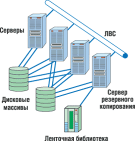
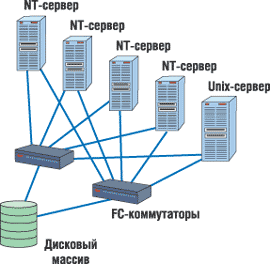
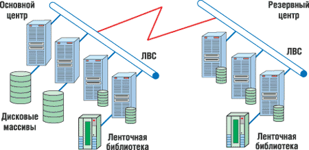
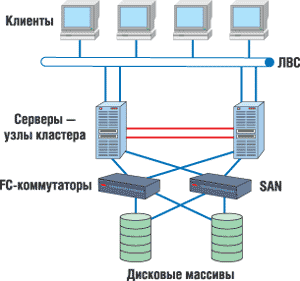

Олег Спиряев
Если в конце прошлого века информация была просто важна для бизнеса, то сейчас, в начале нового века, многие полагают, что информация и есть бизнес. Ведь не секрет, что ныне информация, хранящаяся в электронном виде, составляет основу бизнеса любой коммерческой организации. Критические бизнес-приложения в таких областях, как хранение данных, базы данных с оперативным доступом, видео, обработка графики, системы машинного проектирования, приложения клиент-сервер и электронная коммерция, требуют не только высокой производительности и работы с большими объемами данных, но и доступности информации в любое время, а также надежности и удобства в обслуживании.
Часто бывает недостаточно просто хранить корпоративные данные; нужно, чтобы они были доступны 24 часа в сутки 7 дней в неделю 365 дней в году. Это, в частности, необходимо критическим приложениям для обработки данных, которые географически удалены от обрабатывающего их сервера. Кроме того, часто нужен одновременный и очень быстрый доступ для нескольких серверов к удаленно хранящимся данным.
С изменением концепции информационно-технологического обеспечения предприятий изменяется сам подход к обработке и хранению данных. Многие предприятия, для которых обработка информации в масштабе реального времени - это ключевой фактор (банки, телекоммуникационные компании и т. д.), всерьез озабочены сохранностью и доступностью своих данных для обработки. И особое место в стратегии построения высокодоступной системы занимает обеспечение катастрофоустойчивости информационно-технологической структуры.
Под катастрофоустойчивостью обычно понимают способность к восстановлению работы приложений и данных за минимально короткий период времени после катастрофы. Причем под катастрофами подразумеваются не только пожар, наводнение или землетрясение, но и возможные непредвиденные сбои в работе служб, разрушение данных или повреждение всего центра обработки в результате разных причин, например, разрыв телекоммуникационных линий в результате проведения ремонтных работ, умышленной диверсии или саботажа.
Центры обработки данных
Сегодня все больше предприятий начинают предъявлять повышенные требования к своей информационной структуре, и все больше приложений переходят в разряд критически важных. Увеличивается число организаций, для которых словосочетание "непрерывность бизнеса" перестает быть просто красивым словосочетанием, употребляемым в компьютерной литературе.
Все более или менее серьезное оборудование подразумевает некоторую степень избыточности. Серверы и дисковые массивы оснащаются резервными источниками питания, вентиляторами, дублирующими контроллерами, процессорами, зеркалированной кэш-памятью и еще многими другими избыточными устройствами. Все эти усилия направлены на устранение единой точки отказа внутри оборудования. Для построения отказоустойчивой системы это необходимо, но для катастрофоустойчивой - еще недостаточно. Если отказоустойчивая система способна сохранять работоспособность в случае выхода из строя отдельных компонентов, то катастрофоустойчивая остается работоспособной и в случае одновременного множественного выхода из строя ее составных частей или узлов в результате действий непредвиденного характера.
|
Центр обработки данных обычно представляет собой комплексное организационно-техническое решение для создания высокопроизводительной и отказоустойчивой информационной инфраструктуры. Подобные центры консолидируют ресурсы и организуют эксплуатационный процесс для поддержания соответствующих услуг. |
Современные центры обработки данных (ЦОД) предоставляют услуги прежде всего в форме информационных сервисов. Среди таких сервисов следует особо отметить так называемые критичные, которые предназначены для выполнения основных бизнес-функций. Вообще говоря, критичными считаются такие сервисы, недоступность которых в течение длительного времени способна повлечь за собой серьезные потери, причем не только финансовые. Так, задержка в обслуживании клиентов может привести к ухудшению имиджа компании, из-за чего, в свою очередь, будут потеряны потенциальные или даже имеющиеся клиенты. Приемлемое время недоступности информационных сервисов зависит от требований бизнеса и для каждого предприятия определяется индивидуально. Оно варьируется от нескольких минут до нескольких часов, и обычно эта цифра фиксируется в соглашении об уровне сервиса - SLA (Service Level Agreement).
Важнейшее качество ЦОД - способность обеспечивать требуемый уровень отказоустойчивости. Отказоустойчивость ЦОД (в частном случае - катастрофоустойчивость) обеспечивается в основном технологиями кластеризации и резервирования. Соответствующая конфигурация кластера (кластеров) гарантирует практически любой требуемый уровень готовности ЦОД. При этом появляется возможность полного дублирования физических и виртуальных серверов, хранилищ данных, сетей SAN, сетей доступа и вспомогательного (инфраструктурного) оборудования, предназначенного поддерживать отказоустойчивость/катастрофоустойчивость системы. Отметим, что в кластеры могут объединяться как отдельные серверы ЦОД, так и виртуальные домены в пределах одного сервера.
В состав современного ЦОД входят серверный комплекс, хранилище данных, сеть передачи данных, система управления и т. д. При этом основными элементами высокой доступности считают кластеры, системы хранения и системы резервного копирования.
Хранилище данных
В ЦОД существует единое хранилище данных для всех функциональных задач. Как правило, оно представляет собой несколько интеллектуальных дисковых массивов (монолитных или модульных), а также одну или несколько систем ленточного хранения информации, подключенных к серверному комплексу ЦОД (рис. 1). Для создания хранилища данных ЦОД обычно рекомендуется SAN-архитектура (рис. 2). Дело в том, что хранилище данных ЦОД, реализованное с использованием сети хранения данных SAN, имеет следующие преимущества:
- высокую производительность;
- высокую расширяемость с сохранением архитектурной простоты;
- прозрачное управление доступом к данным с нескольких серверов или виртуальных доменов;
- надежность хранения данных и поддержку их интеллектуального резервного копирования;
- обеспечение непротиворечивости данных, в том числе при выполнении операций восстановления с резервных копий.
|  |  |
| Рис. 1. Система хранения.
|
Рис. 2. Блок-схема сети SAN.
|
В качестве основного элемента сети хранения данных ЦОД обычно рекомендуют использовать современные многопортовые или монолитные модульные коммутаторы Fibre Channel.
Система резервного копирования
Система резервного копирования и архивирования ЦОД должна обеспечивать максимальную автоматизацию процесса создания архивных и резервных копий данных, расположенных в хранилище данных и на серверах. На базе известных решений для конкретных реализаций ЦОД создаются оптимальные схемы резервирования и архивирования данных, подбираются онлайновые, офлайновые и иерархические системы хранения данных, разрабатываются планы восстановления. Это позволяет повысить надежность хранения данных, полностью автоматизировать процесс создания и отслеживания копий, исключив потребность в персонале при проведении операций архивирования и резервирования.
|
Система резервного копирования представляет собой служебную подсистему системы хранения данных; это обязательный компонент решения по обеспечению высокой доступности информационной системы. Она позволяет восстановить работоспособность информационных сервисов даже в тех случаях, когда данные повреждены. |
Создание централизованной системы резервного копирования сокращает (по сравнению с децентрализованной) совокупную стоимость владения ИТ-инфраструктурой за счет оптимального использования аппаратуры и уменьшения расходов на администрирование. Такая система имеет многоуровневую архитектуру, включающую:
- сервер управления резервным копированием (который одновременно может выполнять функции сервера копирования данных);
- один или несколько серверов копирования данных, к которым подключены устройства резервного хранения данных;
- компьютеры-клиенты с установленными на них программными агентами резервного копирования;
- консоль администратора системы резервного копирования.
Администратор системы ведет список клиентов резервного копирования, устройств записи и носителей данных, а также составляет расписание копирования. Вся эта информация содержится в специальной базе, которая хранится на сервере управления резервным копированием. В соответствии с расписанием или по команде оператора сервер управления дает программному агенту, установленному на компьютере-клиенте, инструкцию приступить к копированию данных согласно выбранной политике. Агент начинает сбор данных, подлежащих резервированию, и их передачу на указанный сервером управления сервер копирования, который, в свою очередь, сохраняет полученные данные на подключенном к нему устройстве резервного хранения данных. Информация о процессе (какие файлы копировались, на какие носители и т. п.) сохраняется в базе сервера управления, чтобы можно было быстро найти данные, если возникнет необходимость их восстановления на компьютере-клиенте.
Чтобы сохраненные данные были непротиворечивыми, они не должны подвергаться изменению в процессе сбора и копирования. Поэтому перед началом процедуры приложения компьютера-клиента должны завершить все транзакции, сохранить содержимое кэш-памяти на диске и приостановить работу. Соответствующие действия инициируются по команде программы-агента.
Так как система резервного копирования относится к числу служебных, т. е. нагрузка на вычислительные средства, которую она создает, не считается полезной с точки зрения предоставления информационных сервисов, эту нагрузку желательно уменьшить. Данная задача распадается на две: сокращение так называемого окна резервного копирования (т. е. времени, в течение которого компьютер-клиент выполняет резервное копирование) и уменьшение трафика данных в корпоративной локальной сети. Внедрение системы резервного копирования в составе системы хранения данных позволяет сократить "окно" благодаря интеграции со средствами создания копий, реализованными в современных дисковых массивах: с данных практически мгновенно делается "моментальный снимок", и резервное копирование выполняется уже с этого снимка, а сервер продолжает работу. Снизить нагрузку на локальную сеть помогают технологии, предоставляемые SAN-сетями (например, LAN-free backup и serverless backup).
Если предприятие располагает резервным центром обработки данных, то для системы резервного копирования необходимо предусмотреть интеграцию с этим центром. Переход к использованию резервного центра влечет за собой изменения политики защиты и хранения данных, условий эксплуатации и зачастую сопровождается модернизацией существующей системы резервного копирования. В частности, вычислительные средства этого центра позволят выполнять обязательное тестирование резервных копий данных на работоспособность, разгрузив вычислительные средства основного ЦОД и упростив данную процедуру. Возможно также организовать хранение дубликатов резервных копий в этом центре, а не в стороннем удаленном хранилище.
Резервные центры
Для функционирования катастрофоустойчивой системы требуется распределение компонентов, разнесение ее узлов на значительные расстояния. Это, в частности, позволяет подключать систему к разным подстанциям или электростанциям, исключая точку отказа по сбою в подаче питания и обеспечивая непрерывность бизнеса в случае выхода из строя не только узла кластера, но и всей площадки.
Резервный центр (рис. 3) позволяет восстановить работоспособность информационных сервисов при выходе из строя всего серверного комплекса по причине техногенной или природной катастрофы. С архитектурно-технической точки зрения это ЦОД, хотя и не копия основного, поскольку он должен быть рассчитан на дублирование не всех сервисов, а только тех, без которых предприятие не может продолжать работу.
|  |
| Рис. 3. Основной и резервный центры.
|
В резервном центре должны быть актуальные копии данных, требуемых для работы информационных сервисов, а также их резервные копии. Кроме того, следует проработать меры, которые обеспечат своевременный перевод выполнения критичных сервисов на вычислительные средства резервного центра в случае выхода из строя основного ЦОД.
Для получения актуальных копий данных применяются технологии репликации. Самая передовая из них на сегодня - так называемая аппаратная репликация. В действительности же она выполняется встроенным ПО интеллектуальных дисковых массивов, но это происходит абсолютно прозрачно для подключенных к массивам серверов. Чаще всего аппаратная репликация между массивами организуется по протоколу Fibre Channel, основному для SAN-сетей. Одно из достоинств SAN - как раз возможность быстрой передачи данных на большие расстояния не только средствами репликации, но и другими методами, например, зеркалирования. Сеть хранения данных, соединяющая ЦОД и резервный центр, позволяет объединить все устройства хранения в единый пул, одновременно доступный из обоих центров всем серверам, подключенным к SAN.
Перевод критичных информационных сервисов на вычислительные средства центра может происходить как автоматически, так и по команде оператора. Автоматический перевод используется в тех случаях, когда очень высоки требования к срокам восстановления доступности (не больше нескольких минут) или в резервном центре отсутствует квалифицированный персонал. Для организации автоматического запуска информационных сервисов используются кластерные технологии, при помощи которых серверы ЦОД и резервного центра объединяются в единый серверный комплекс с удаленными друг от друга узлами.
С помощью технологии SAN можно организовать резервное копирование информационных массивов из ЦОД на устройства резервного хранения данных, расположенные в резервном центре. Это позволит регулярно тестировать резервные копии данных (что необходимо для проверки работоспособности информационных сервисов после восстановления данных с этих копий), не создавая помех для работы информационных сервисов в ЦОД.
Если расстояние между центрами превышает 10 км, то для связи между ними может применяться технология уплотненного спектрального мультиплексирования DWDM (Dense Wavelength Division Multiplexing), которая позволяет оптимальным образом задействовать оптоволоконные ресурсы и передавать трафик Fibre Channel, ESCON, Ethernet.
Необходимость в отказоустойчивых решениях, особенно после атаки на Всемирный торговый центр в Нью-Йорке в сентябре 2001 г. и массовых отключений электроэнергии, не вызывает сомнения. А глобальность корпораций и компьютерных систем требует возможности разнести компоненты системы на максимальные расстояния.
Учитывая растущую потребность глобальных корпораций в системах восстановления, корпорации EMC (http://www.emc.com) и Fujitsu Siemens Computers (http://www.fujitsu-siemens.com) еще в 2003 г. продемонстрировали на глобальном уровне переключение во время сбоя и восстановление в реальном времени ERP-приложения SAP, используя два центра обработки данных, расположенных в Хопкинтоне (шт. Массачусетс, США) и в Корке (Ирландия). Уже через 4 мин и 35 с после сбоя в Хопкинтоне, который произошел в 10:57 по местному времени, резервная система в Корке, расположенная на расстоянии 3 тыс. миль, работала и проводила полную обработку транзакций SAP.
Это было первое интегрированное решение для переключения во время сбоя и восстановления бизнес-приложений, способное функционировать даже в трансатлантическом масштабе. В него входило высокопроизводительное ПО для удаленной репликации SRDF/Asynchronous (SRDF/A) корпорации EMC, многопротокольные блоки управления каналами Symmetrix DMX GigE и полнофункциональный набор продуктов PrimeCluster от Fujitsu Siemens Computers, обеспечивающий высокую степень готовности. В каждом центре были установлены серверы PrimePower 400 под управлением ОС Solaris 8 с установленной СУБД Oracle8 и SAP R/3, система хранения данных Symmetrix DMX800, сетевая инфраструктура и соответствующее ПО. Узлы "общались" через трансатлантическую сеть ATM Sonet с относительно небольшой пропускной способностью.
Новая возможность удаленной связи позволяет теперь компаниям эффективнее использовать существующую информационную и коммуникационную инфраструктуру. Стоит отметить, что взаимодействие компаний EMC и Fujitsu Siemens Computers началось еще в 1997 г. Fujitsu Siemens поставляет весь ряд сетевых систем хранения CLARiiON производства компании EMC под торговой маркой FibreCAT, являясь также крупнейшим торговым посредником EMC при продаже систем Symmetrix. Кроме того, Fujitsu Siemens предлагает файловые серверы EMC Celerra, решения Centera Content Addressed Storage (CAS), коммутаторы Connectrix Fibre Channel и открытые программные средства EMC для Европы, Ближнего Востока и Африки.
Программные решения для репликации данныхСемейство средств Symmetrix для работы с удаленными данными - Symmetrix Remote Data Facility (SRDF) и семейство продуктов TimeFinder считаются самыми многофункциональными и надежными решениями для репликации данных на рынке. Решения Symmetrix для локальной и удаленной репликации данных позволяют установить баланс между производительностью, доступностью, функциональностью системы и экономическими требованиями и достичь необходимого уровня обслуживания в плане восстановления данных после сбоя и непрерывности ведения бизнеса. Набор решений, входящих в семейство ПО SRDF, полностью поддерживает аппаратную архитектуру Symmetrix класса high-end, обеспечивая удобство использования и хорошие возможности масштабирования. Это позволяет реализовать широчайший спектр возможностей удаленной репликации, совмещая требования смешанных уровней обслуживания и минимальные запросы к ресурсам системы. Стоит отметить, что семейство SRDF, хорошо зарекомендовавшее себя на практике, - это самый распространенный на сегодня в мире набор решений для репликации класса high-end, установленный на десятках тысяч систем в самых требовательных окружениях. Семейство SRDF может обеспечить согласованность данных в разных системах хранения и разных томах, тесную интеграцию с наиболее распространенными в отрасли приложениями, а также упрощенное использование за счет автоматизированного управления. Основные продукты семейства SRDFSRDF/Synchronous (SRDF/S) (Синхронная) - высокопроизводительная, независимая от сервера синхронная удаленная репликация в реальном времени с одной системы Symmetrix на другую или на несколько других систем Symmetrix. SRDF/Asynchronous (SRDF/A) (Асинхронная) - высокопроизводительная удаленная асинхронная репликация, использующая архитектуру Delta Set со сниженными требованиями к пропускной способности, не влияющую на производительность сервера. SRDF/Data Mobility (SRDF/DM) (Мобильность данных) - быстрая передача данных от исходных томов на удаленные тома, расположенные в любой точке мира, за счет чего можно совместно использовать информацию, распределять данные и объединять информацию для проведения централизованной параллельной обработки. Дополнительные модули семейства SRDFSRDF/Consistency Groups (Группы согласованности) - поддерживают непротиворечивость данных в SRDF-конфигурации путем управления распространением данных от исходных томов до соответствующих конечных томов, что обеспечивает согласованность данных и возможность перезапуска баз данных. SRDF/Automated Replication (Автоматизированная репликация) - быстрый перезапуск бизнес-приложений на любом расстоянии с сохранением конфиденциальности данных через развитые одноузловые и многоузловые ретрансляционные конфигурации, использующие комбинации систем TimeFinder/Mirror и SRDF/S и/или SRDF/DM. SRDF/Cluster Enabler (Средства создания кластеров) для MSCS или VCS - высокая доступность и автоматическое восстановление данных после сбоя посредством репликации хранилища и кластеризации серверов через SRDF/S и MSCS или VCS. SRDF/Automated Availability Manager (Автоматизированный контроль готовности) - обеспечивает доступность приложения в автоматическом режиме посредством интегрирования ПО репликации хранилища и ПО серверных приложений через EMC SRDF/S или SRDF/A и Legato AAM (ПО создано компанией Legato, ныне подразделением EMC). Решения семейства SRDF предоставляют следующие преимущества:
|
Серверный комплекс
Серверы ЦОД обычно базируются на современной высокопроизводительной архитектуре с высокой масштабируемостью и аппаратной реализацией функций RAS, а также с поддержкой технологий виртуализации ресурсов ЦОД. ОС и аппаратные средства таких систем должны иметь функции высокой доступности и резервирования и поддерживать обслуживание без остановки системы. Серверная конфигурация может быть организована на основе серверов с вертикальной и горизонтальной масштабируемостью. Напомним, что под вертикальной масштабируемостью понимают сильносвязанные SMP-системы, применяемые для решения бизнес-задач, ориентированные на обработку транзакций и легко наращиваемые по всем основным ресурсам (процессоры, оперативная память, система ввода-вывода). Для таких серверов легко масштабировать их производительность при работе с приложениями нефиксированной вычислительной мощности. При этом, как правило, наблюдается почти линейный рост производительности при увеличении числа процессоров и каналов ввода-вывода.
Горизонтальное масштабирование, в свою очередь, подразумевает способность системы без затруднений поддерживать и интегрировать новые, добавляемые к сети серверы. Интегрирование новых серверов в уже функционирующую рабочую среду позволяет распределить нагрузку в системе и поддерживать увеличенный спрос на статический состав. Горизонтальное масштабирование можно проводить с помощью небольших, сравнительно недорогих серверов.
Повышение надежности системы при разумной стоимости и достаточной производительности требует компромиссных решений. Как правило, критерием служит допустимое время простоя, при этом для увеличения доступности обычно используют такие методы, как дублирование компонентов системы, резервное копирование и создание кластеров. В тех случаях, когда к вычислительной системе предъявляются высокие требования в отношении надежности, доступности и производительности, кластеры, пожалуй, оказываются вне конкуренции. Конечно, кластерные решения часто обходятся намного дороже, чем многопроцессорный сервер. Но тем не менее, если вышеперечисленные характеристики жизненно важны для деятельности предприятия или организации, заказчик, как говорится, за ценой не постоит, чтобы не оказаться в ситуации, когда придется платить вдвойне.
Кластеры
Отказоустойчивые серверные комплексы ЦОД, построенные на базе кластерной технологии (рис. 4), - одно из решений в необходимом комплексе мер для обеспечения непрерывности бизнеса.
|  | Рис. 4. Применение кластера.
|
Напомним определение кластера: это вычислительная система, состоящая из множества независимых компьютеров, связанных между собой каналами передачи данных. Свойство локальности кластера заключается в том, что все его подсистемы "видны" в едином административном домене, и управление кластером выполняется как единой вычислительной системой. Компьютеры, входящие в состав кластера, называются узлами, или нодами (node). Узлы могут быть однопроцессорными или мультипроцессорными. В классической схеме все узлы при работе с приложениями разделяют внешнюю память на массиве жестких дисков, используя внутренние дисковые накопители для более специальных функций. Для межузлового взаимодействия обычно применяется стандартная сетевая технология, хотя это не исключает специально разработанных каналов связи. Кластерная сеть отделена от внешней сетевой среды.
|
Кластеры предназначены для восстановления работоспособности информационных сервисов в случае сбоев в работе или выхода из строя одного или нескольких серверов ЦОД. |
В типовом случае кластеры служат для решения трех проблем. Во-первых, для обеспечения высокого уровня доступности, или готовности. Суть этой характеристики заключается в том, что система должна предоставить пользователям доступ к сервисам в запланированное время с высокой вероятностью обслуживания и иметь минимальное время незапланированных простоев. Во-вторых, решается проблема обеспечения высокой надежности. Для этого необходимо уменьшить частоту отказов системы. Решение считается высоконадежным, если оно минимизирует число единых точек отказа, уменьшая тем самым риск, что отказ одного компонента вызовет отказ в предоставлении требуемого сервиса. Высокая надежность достигается за счет избыточности и отказоустойчивости как аппаратных компонентов, так и прикладного и системного ПО. И в-третьих, кластеры используются для обеспечения масштабируемости.
Узлы кластера могут быть активными и пассивными. Активные узлы обслуживают запросы, тогда как пассивные находятся в "горячем" резерве. В многоузловом кластере возможно любое сочетание активных и пассивных узлов. При выходе активного узла из строя его функции начинает выполнять соответствующий пассивный узел.
|
Для защиты от катастроф узлы кластера должны быть географически разнесены на достаточные расстояния. Узлы могут размещаться в разных помещениях, на разных этажах здания, в разных районах города или даже в разных городах или странах. Расстояние между узлами определяется исходя из потребностей компании и используемой технологии репликации данных. |
В локальном кластере все узлы расположены в одном центре, что практически не обеспечивает никакой катастрофоустойчивости. Кампусный кластер обычно используется во многих центрах как альтернативный способ размещения узлов обработки и хранения данных, которые распределяются по территории предприятия. Таким образом, сбой в одном здании не приводит к простою всей системы. Расстояния между узлами ограничены использующейся технологией реплицирования данных, а сами такие кластеры обычно используют:
- избыточные диски со средствами реплицирования данных;
- избыточные сетевые кабели, проложенные по разным маршрутам;
- альтернативные источники питания каждого узла.
Некоторые компании требуют подачи питания от разных подстанций, что защищает кластер от возможных перебоев с подачей электроэнергии.
У метрокластера (класса города или района) имеются дублирующие узлы, расположенные в разных частях города или в пригородах. Разнесение узлов на большие расстояния уменьшает вероятность выхода из строя дублирующего узла в результате катастрофы. По архитектуре метрокластер очень напоминает кампусный, с той разницей, что значительно увеличены расстояния между узлами. Соответственно, предполагается наличие разрешения местных властей на прокладку сетевых кабелей и кабелей репликации данных, что может усложнить процедуру разработки и развертывания кластера.
Метрокластер также предполагает наличие средств синхронизации работы. Обычно для выполнения этой задачи используется площадка-арбитратор, содержащая дополнительный узел, который состоит из выделенного сервера, выполняющего связующую и синхронизирующую роль для всех узлов кластера. Арбитраторы - это полнофункциональные системы, являющиеся составными частями кластера, но не подсоединенные к дисковым массивам. В метрокластере поддерживаются конфигурации с одним или двумя арбитраторами, причем последние более предпочтительны, так как обеспечивают больший уровень доступности.
Основное различие между кампусным и городским (метро) кластером - в технологии реплицирования данных. Кампусный использует соединение Fibre Channel и средства ОС для реплицирования данных, что накладывает ограничения на расстояния между центрами обработки. Метрокластер использует методы репликации, позволяющие разносить дисковые массивы на большие расстояния.
Континентальный кластер представляет собой совокупность дублированных кластеров, разнесенных на значительные расстояния, причем так, чтобы между ними не использовались технологии локальных сетей. В архитектуре континентального кластера каждый входящий в него кластер полностью правомочен, поэтому площадка-арбитратор не используется. Для соединения кластеров в этой архитектуре используются глобальные сети на базе TCP/IP, однако для репликации данных могут понадобиться и высокоскоростные соединения, такие, как выделенные или коммутируемые линии T1 или T3/E3.
При построении катастрофоустойчивого кластера необходимо предусмотреть и обеспечить прокладку основного и резервного каналов связи по разным маршрутам. Для построения правильной архитектуры весьма важно определить, насколько уязвим бизнес и каково максимальное время простоя ИТ-инфраструктуры, при котором бизнесу еще не будет нанесен непоправимый ущерб. Для некоторых предприятий или подразделений внутри одного предприятия это может быть день или два, для других простой в одну минуту уже влечет за собой ощутимые потери. Возможно, что одни приложения нуждаются лишь в местной защите, например, от сбоя узла, а другие требуют как местной защиты, так и защиты от выхода из строя всей площадки. Не менее важно определить, какую роль играют каждые конкретные серверы в бизнесе. Например, следует быстрее восстанавливать серверы, отвечающие за обслуживание сборочной линии, однако если они размещены неподалеку от сборочной линии и произошло, скажем, землетрясение, то сборочная линия выходит из строя вместе с серверами, так что запуск на удаленной площадке приложений, управляющих сборкой, не имеет смысла. С другой стороны, систему управления поставками все же стоит запустить на другой площадке, поскольку это обеспечит работу отдела продаж и непрерывность поставок продукции заказчикам.
Резюмируя, можно сказать, что катастрофоустойчивость системы в аппаратной части обеспечивается географическим разнесением узлов, реплицированием данных, использованием нескольких источников питания (разные подстанции) и созданием высоконадежной сетевой инфраструктуры.
Устойчивость к катастрофам на Intel-платформахКластеризация, которая позволяет одновременно повысить готовность системы и уменьшить время отклика на запросы, до недавнего времени была уделом лишь систем высшего ценового класса, но сегодня превалирует на Intel-платформах. Используя опыт, накопленный при создании высоконадежных систем на базе мэйнфреймов, работающих под управлением Unix, корпорация Fujitsu Siemens Computers в состоянии не только создавать отказоустойчивые системы на основе серверов Primergy, но и обеспечивать при этом нужную функциональность. Например, программные продукты MultiPath и Duplex Data Manager позволяют организовать как избыточные каналы доступа между сервером и внешними подсистемами хранения, так и внешние подсистемы хранения, используя "зеркальное" отражение данных. В сочетании с кластерными решениями и оптоволоконной технологией эти функции создают удаленные "зеркала" информационных центров, обеспечивая таким образом непрерывную доступность информационной инфраструктуры даже в случае крупных аварий. |